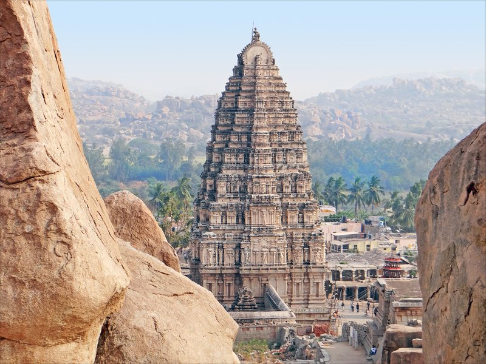
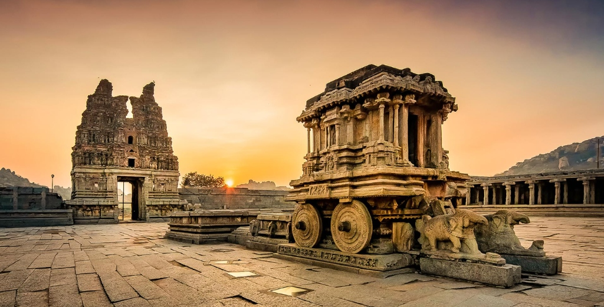
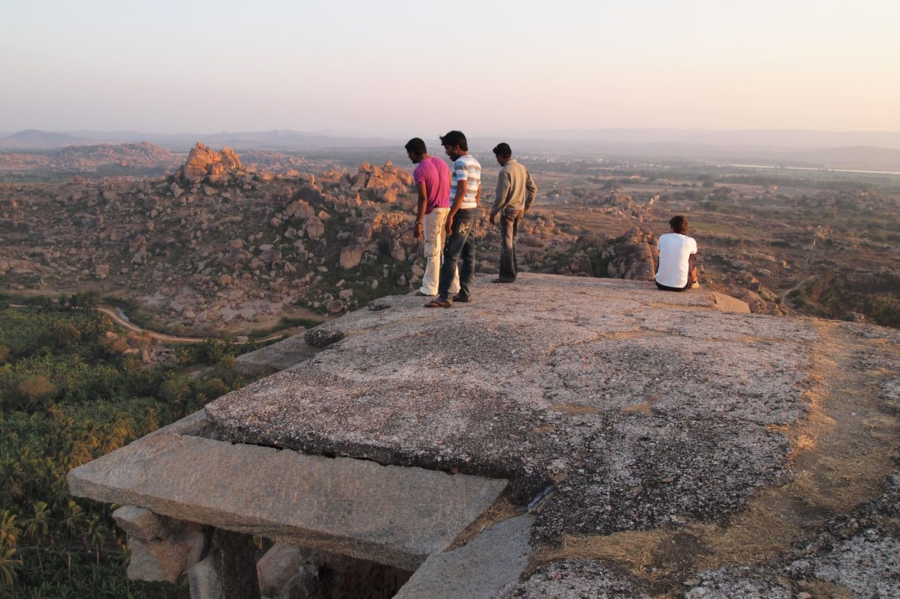
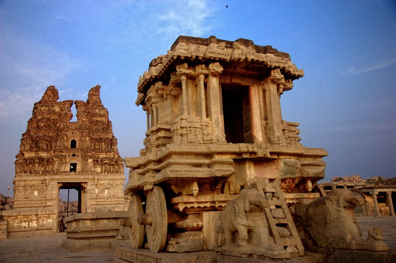
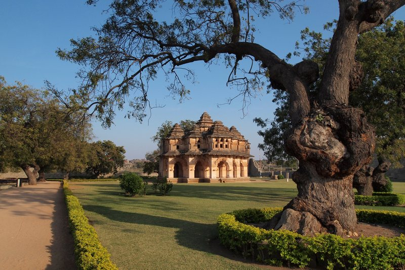
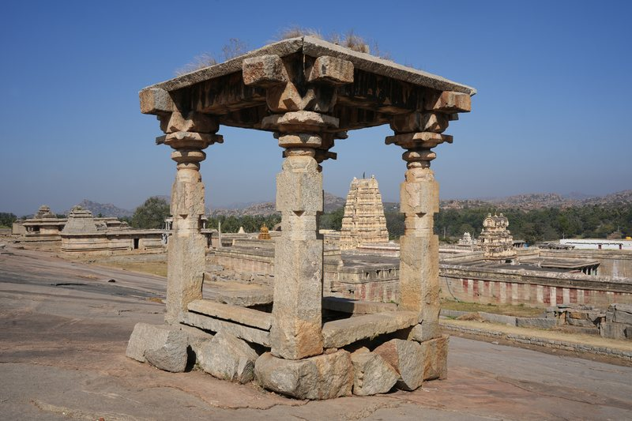
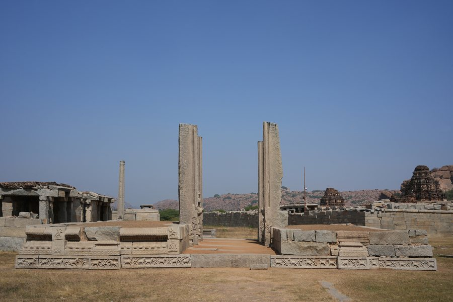
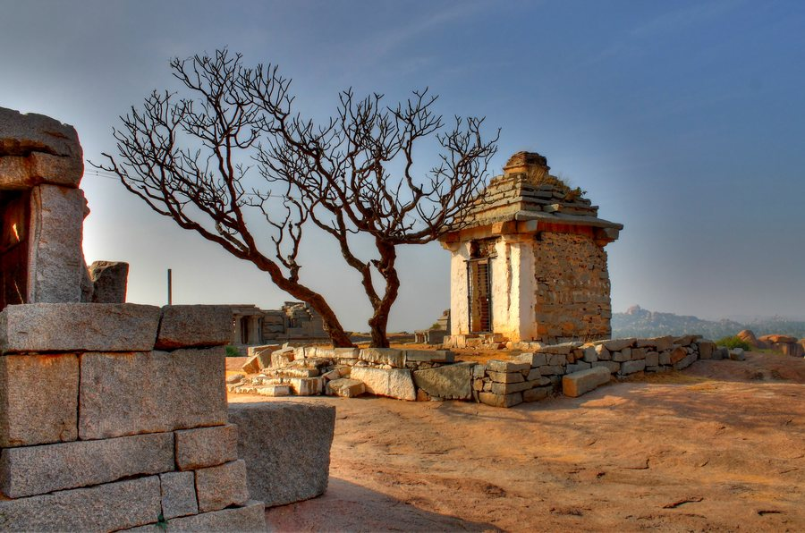
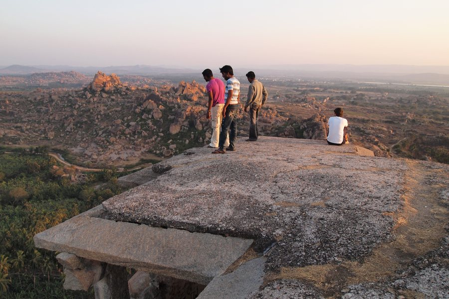
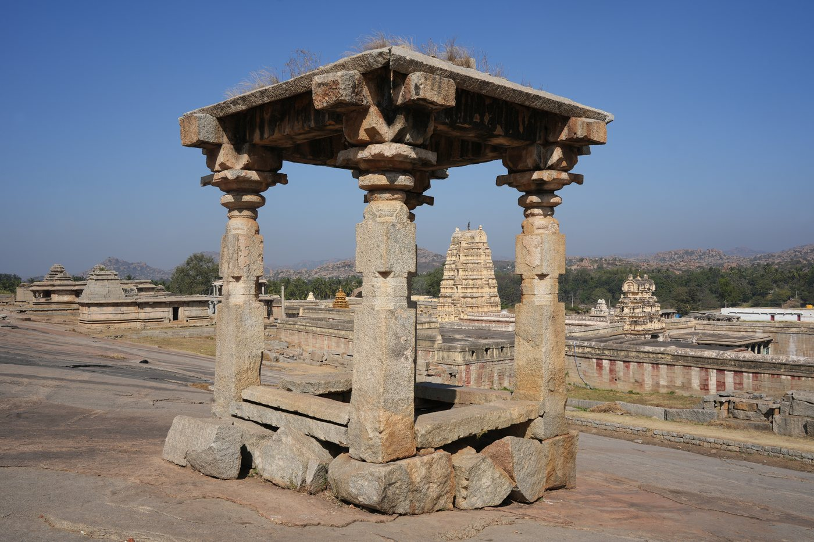

Living Sacred TempleVirupaksha Temple
Discover a historic temple complex that remains an important place of worship and a defining landmark of Hampi.
50m Tiered Gopuram
Pin-hole Shadow Effect

Walk through the ancient kingdom of Vijayanagara, discover magnificent temples, wander across extraordinary boulder landscapes, and experience the timeless beauty of Hampi.
Once the capital of the Vijayanagara Empire, Hampi is a remarkable landscape where ancient architecture, sacred spaces, and nature exist side by side. Today, its surviving monuments and extraordinary rocky terrain invite travellers to experience centuries of history.
Dating back to the 14th century, the historic kingdom flourished along the banks of the sacred Tungabhadra River. Renowned across medieval trading routes as one of the world's grandest metropolises, Hampi's royal palaces, open-air stone bazaars, and exquisitely carved sanctums stand resilient amidst time, whispering chronicles of art, devotion, and timeless human spirit.

Discover the landmarks that make Hampi one of Karnataka's most extraordinary heritage destinations.

Living Sacred TempleDiscover a historic temple complex that remains an important place of worship and a defining landmark of Hampi.

Iconic WonderAdmire remarkable Vijayanagara craftsmanship and the iconic stone chariot within the Vittala Temple complex.

Royal EnclosureExplore an elegant historic structure known for its distinctive arches and architectural character.

Panoramic VistasExperience a landscape of ancient shrines, rocky surroundings, and beautiful views across Hampi.
Engage with Hampi through curated perspectives that reveal the living spirit, geological majesty, and poetic light of this UNESCO World Heritage sanctuary.

Slow down and discover historic pathways, temple architecture, ancient market areas, and the stories behind Hampi's surviving monuments.

Explore Hampi's extraordinary rocky scenery and discover scenic viewpoints across the historic landscape.

Capture warm light falling across ancient stone structures, dramatic hills, and the surrounding landscape.
Travel Discovery Concept: These curated experiences are suggestions designed for independent travel discovery and inspiration. Hidden Karnataka does not operate commercial ticketing or guided services.
A thoughtfully paced two-day itinerary designed to balance architectural marvels, peaceful viewpoints, and timeless heritage discovery.
Begin early at the living heart of Hampi. Walk through the 50-meter Raya Gopuram, admire 500-year-old ceiling frescoes, and stroll down the broad historic avenue of Hampi Bazaar.
Ascend the sloping granite sheet of Hemakuta Hill to explore over thirty pre-Vijayanagara and Vijayanagara shrines, offering quiet reflection and expansive valley vistas.
After a traditional regional lunch, visit the monolithic Sasivekalu Ganesha and Kadalekalu Ganesha, along with the partially submerged underground Shiva Temple (Prasanna Virupaksha).
Conclude your first day witnessing the golden hour illuminate Hampi's ochre rocks, palm-fringed riversides, and ancient stone towers.
Visit Hampi's crowning jewel in the cooler morning air. Admire the world-renowned Stone Chariot, examine the musical pillars of the Ranga Mandapa, and marvel at the craftsmanship.
Journey into the Zenana Enclosure to see the striking Indo-Islamic archways of Lotus Mahal and the monumental domed chambers of the royal Elephant Stables.
Inspect the geometrically mesmerizing black schist stepped tank, the Mahanavami Dibba coronation platform, and the underground chambers of the emperor's court.
Finish your journey capturing panoramic viewpoints from Matanga Hill or the Tungabhadra riverside, watching the sunset paint the Vijayanagara ruins with warm amber light.
Hidden Karnataka is a non-commercial travel discovery concept created to illuminate the cultural depth, architectural brilliance, and natural drama of Hampi for every conscious traveller.
Context-rich architectural summaries that reveal historical context, hidden stone carvings, and architectural significance without commercial clutter.
Realistic, balanced time-plans that help you discover major highlights without exhaustion, accounting for Karnataka's warm climate and extensive walking distances.
Exact viewpoints, ideal sun angles, and golden-hour recommendations for photographers, content creators, and contemplative sunset watchers.
Respectful appreciation of sacred spaces, living traditions, local artisans, coracle river crossings, and historical folklore of Karnataka.

From ancient monuments to unforgettable landscapes, discover a destination that stays with you long after the journey ends.